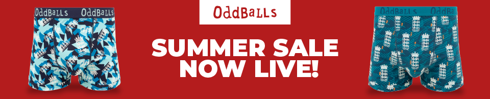

Spin the county. Spin the year. Draft your all-time T20 Blast XI. 16 group games, then Quarter-Final, Semi Final and Final. Can you go 19-0?
19-0 is a free cricket draft and simulation game. Build an all-time XI from any era across county T20 cricket, Test cricket, or the ODI World Cup, then play out a full campaign: squad selection, match simulation, and a season review at the end.
1. Promoter
This competition is organised and promoted by OddBalls Apparel Ltd & 19-0 ("OddBalls", "we", "us", or "our").
2. Eligibility
2.1 The competition is open to residents of the United Kingdom aged 18 years or over at the time of entry.
2.2 Employees of OddBalls, its affiliates, subsidiaries, or anyone professionally connected with this promotion are not eligible to enter.
2.3 Participants must be a logged in user on 19-0.
3. How to Enter
3.1 To enter, participants must complete a 11-0 run in the World Cup mode. They must then submit their first name and email address via the competition entry form pop-up.
3.2 No purchase is necessary to enter the competition.
3.3 Entries must be received before the closing date specified in Section 4.
3.4 Incomplete, late, or invalid entries will not be accepted.
4. Competition Period
4.1 The competition opens upon launch of the promotional campaign and closes at 23:59 (BST) on 31st July 2026.
4.2 Entries received after this time will not be included in the draw.
5. The Prize
5.1 Five (5) winners will receive an OddBalls underwear and accessory bundle worth £100 or over.
5.2 The prize is non-transferable, non-exchangeable, and no cash alternative is available.
5.3 OddBalls reserves the right to substitute the prize with an alternative of equal or greater value if necessary.
6. Winner Selection and Notification
6.1 The winners will be selected at random from all valid entries received.
6.2 The draw will take place after the competition closing date.
6.3 The winner will be contacted via the email address provided within 7 days of the closing date.
6.4 If the winner does not respond within 7 days of notification, OddBalls reserves the right to select an alternative winner.
7. Prize Fulfilment
7.1 Once the winner has been confirmed, they will receive correspondence to confirm their preferred size and style, and delivery address.
7.2 The items included in the bundle will be based on the style and size selected by the winner.
8. Data Protection
8.1 By entering this competition, you agree that your personal data (including your email address) will be processed by OddBalls and 19-0 for the purpose of administering the competition.
8.2 Entrants will also receive marketing communications when they opt in at the point of entry.
8.3 Personal data will be handled in accordance with applicable data protection laws and OddBalls' Privacy Policy.
9. General
9.1 OddBalls reserves the right to cancel, suspend, or amend the competition where necessary due to circumstances beyond its reasonable control.
9.2 OddBalls reserves the right to disqualify any entrant found to be in breach of these Terms & Conditions.
9.3 By entering, participants agree to be bound by these Terms & Conditions.
19-0 is a mobile-first cricket draft and simulation game built by one fan, for cricket fans. Everyone who plays it already loves cricket, and they stick around for full T20 Blasts and Test cycles. Put your brand in front of them.
